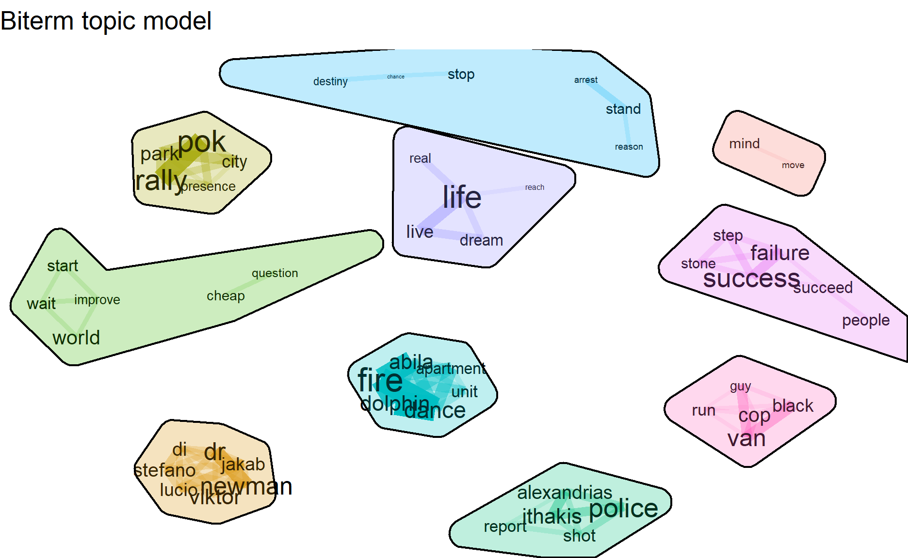
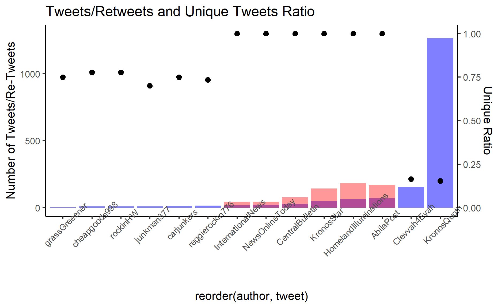
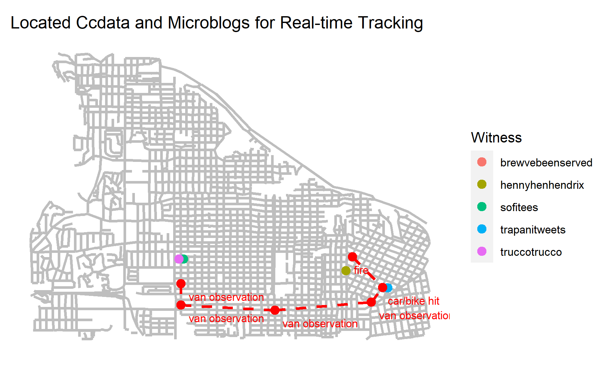

Show code
packages= c('sf','clock','tmap',
'tidyverse','data.table','lubridate',
'textclean','tm','wordcloud','text2vec',
'topicmodels','tidytext','textmineR','quanteda',
'BTM','textplot','concaveman','ggwordcloud',
'qdapDictionaries','textstem','devtools','textnets',
'ggiraph','plotly','igraph', 'tidygraph',
'ggraph', 'visNetwork','udpipe','grid')
for(p in packages){
if(!require(p,character.only= T)){
install.packages(p)
}
library(p, character.only = T)
}
4.Data Visualization for Challenge Questions
Question1
4.1 Using visual analytics, characterize the different types of content in the dataset. What distinguishes meaningful event reports from typical chatter from junk or spam? Please limit your answer to 8 images and 500 words.
Wordcloud trend of 30 minutes time interval
Split data by 30 minutes time interval and perform worldcloud in each interval, to visualize the most frequent words in the microblog.
Show code
#split data into 30 minutes time interval
data$id <- seq.int(nrow(data))
data_subset=subset(data,select=c("time_30min","cleaned"))
data$timestamp <- ymd_hms(data$`date(yyyyMMddHHmmss)`)
data$time_30min = cut(data$timestamp, breaks="30 min")
data$id <- seq.int(nrow(data))
data_subset=subset(data,select=c("time_30min","cleaned"))
usenet_words<-data_subset%>%
group_by(time_30min) %>%
unnest_tokens(word, cleaned) %>%
count(time_30min,word, sort = TRUE)
usenet_words[order(usenet_words$time_30min),]
# A tibble: 6,975 x 3
# Groups: time_30min [10]
time_30min word n
<fct> <chr> <int>
1 2014-01-23 17:00:00 pok 98
2 2014-01-23 17:00:00 rally 76
3 2014-01-23 17:00:00 people 44
4 2014-01-23 17:00:00 park 40
5 2014-01-23 17:00:00 jakab 37
6 2014-01-23 17:00:00 lucio 35
7 2014-01-23 17:00:00 police 35
8 2014-01-23 17:00:00 can 34
9 2014-01-23 17:00:00 abila 30
10 2014-01-23 17:00:00 sylvia 30
# ... with 6,965 more rowsShow code
usenet_words$time_30min<-usenet_words$time_30min %>% str_replace_all("2014-01-23 ","")
l1<-c("18:30:00","19:30:00","17:00:00","19:00:00","20:00:00","20:30:00","18:00:00","17:30:00","21:00:00","21:30:00")
Time_30min<-c("18:30-19:00","19:30-20:00","17:00-17:30","19:00-19:30","20:00-20:30","20:30-21:00","18:00-18:30","17:30-18:00","21:00-21:31","21:00-21:31")
time_30min_df<-data.frame(l1,Time_30min)
usenet_words<-left_join(usenet_words,time_30min_df,by=c("time_30min"="l1"))
set.seed(1234)
usenet_words %>%
group_by(Time_30min) %>%
slice_max(order_by = n, n = 20) %>%
ggplot(aes(label = word,
size = n)) +
geom_text_wordcloud() +
theme_minimal() +
facet_wrap(~Time_30min)
From the visualization, we can tell the main content discussing in the community are
1700-1830 pok rally in park with several name mentioned such as cylvia, jakab, viktor;
1830-1930 fire at dancing dolphin partment, police and evacuation;
1930-2000 shooting and cops/police;
2100-2131 van/ hostage/ explosion;
TF_IDF of 30 mintunes time interval
Then, by applying Term Frequency Inverse document frequency (tf-idf) to bigram texts, we can uncover more information compared with uni-grams.
Show code
data_subset$time_30min<-str_replace_all(data_subset$time_30min,"2014-01-23 21:30:00","2014-01-23 21:00:00")
bigrams <- data_subset%>%
group_by(time_30min)%>%
unnest_tokens(word,
cleaned,
token = "ngrams",
n = 2) %>%
count(time_30min,word, sort = TRUE) %>% ungroup()
# bigrams <- data_subset%>%
# unnest_tokens(word,
# cleaned,
# token = "ngrams",
# n = 2) %>%
# count(time_30min,word, sort = TRUE)
tf_idf <- bigrams%>%
bind_tf_idf(word,time_30min, n) %>%
arrange(desc(tf_idf))
tf_idf$time_30min<-str_replace_all(tf_idf $time_30min,"2014-01-23 ","")
l1<-c("18:30:00","19:30:00","17:00:00","19:00:00","20:00:00","20:30:00","18:00:00","17:30:00","21:00:00","21:30:00")
Time_30min<-c("18:30-19:00","19:30-20:00","17:00-17:30","19:00-19:30","20:00-20:30","20:30-21:00","18:00-18:30","17:30-18:00","21:00-21:31","21:00-21:31")
time_30min_df<-data.frame(l1,Time_30min)
tf_idf<-left_join(tf_idf,time_30min_df,by=c("time_30min"="l1"))
tf_idf %>%
group_by(Time_30min) %>%
slice_max(tf_idf,
n = 10) %>%
ungroup() %>%
mutate(word = reorder(word,
tf_idf)) %>%
ggplot(aes(tf_idf,
word,
fill = Time_30min)) +
geom_col(show.legend = FALSE) +
facet_wrap(~ Time_30min,
scales = "free") +
labs(x = "TF-IDF Bigram in 30 time interval",
y = NULL)

Without having to process more on data, the contents of the microblogs with 30 mins time interval is even more informative as tf-idf reflects how important a word is to a document in a collection or corpus.
For instance, from 1700-1800, we know that police presense at pok rally and Dr.Audrey is mentioned several times from 1800. Then from 1830 , fire occurs at dolphin apartment and followed by evacuation. Subsequently, from 1930, a shot/gun fire happened with police involved, followed by injured firefighter and hospitalization. And at 2100 suspects were arrested and followed by an explosion at dolphin apartment from 2130 onward.
Topic Modeling - Distinguish Junk/Spam/Chatter from Meaningful Events
To distinguish meaningful events from chatter/junk/spam messages, I will then perform topic modeling to identify topic in each microblogs.
Top five words in each topics
Show code
wordcorpus <- Corpus(VectorSource(as.character(data$cleaned)))
dtm <- DocumentTermMatrix(wordcorpus,
control = list(
wordLengths=c(2, Inf), # limit word length
bounds = list(global = c(5,Inf)), # minimum word frequency
removeNumbers = TRUE, #remove Numbers
weighting = weightTf, #weighted term frequency
encoding = "UTF-8"))
rowTotals <- apply(dtm , 1, sum) #Find the sum of words in each Document
dtm.new <- dtm[rowTotals> 0, ] #remove 0 dtm rows of matrix
topic=LDA(dtm.new,k=10,method="Gibbs",conrol=list(seed=2021,alpha=0.01,iter=300))
terms(topic,5)
Topic 1 Topic 2 Topic 3 Topic 4 Topic 5 Topic 6 Topic 7
[1,] "life" "can" "want" "viktor" "just" "report" "fire"
[2,] "make" "thing" "good" "dr" "come" "cop" "abila"
[3,] "think" "look" "time" "newman" "run" "van" "dance"
[4,] "live" "one" "stop" "sylvia" "like" "shoot" "dolphin"
[5,] "one" "great" "give" "us" "day" "evacuate" "arrive"
Topic 8 Topic 9 Topic 10
[1,] "get" "police" "people"
[2,] "go" "pok" "build"
[3,] "take" "rally" "say"
[4,] "success" "park" "resident"
[5,] "two" "area" "may" Extract per-topic-per-word probabilities ,(beta), from the model. The higher the value, the more important of the words contribution to the topic.
Show code
ap_topics <- tidy(topic, matrix = "beta")
ap_top_terms <- ap_topics %>%
group_by(topic) %>%
slice_max(beta, n = 10) %>%
ungroup() %>%
arrange(topic, -beta)
ap_top_terms %>%
mutate(term = reorder_within(term, beta, topic)) %>%
ggplot(aes(beta, term, fill = factor(topic))) +
geom_col(show.legend = FALSE) +
facet_wrap(~ topic, scales = "free") +
scale_y_reordered()
As shown above, the meaningful keywords can be found in each topic. From the distribution, we can see that in abnormal topic such as topic 1,5 and 9, the top words are dominating the topic, while in other chatter/junk/spam topics, a few normal words has relatively same high beta value. As such, topics can be identified roughly as below.
Topic 1 - police related with evacuation/hostage/standoff
Topic 3 - fire at dancing dolphin
Topic 5- van/guy/cop related
Topic 9 - pok rally
Topic 10 - POK leader
While other topics do not have distinguishable words, resulting the contents related to chatter/junk/spam.
Topic Trend
By using gamma value from topic modeling results, we can then assign each document with a topic.
Show code
topic_gamma <- tidy(topic, matrix = "gamma")
topic_gamma <- topic_gamma %>%
group_by(document) %>%
slice(which.max(gamma))
topic_gamma$document<-as.numeric(topic_gamma$document)
#topic_gamma[order(topic_gamma$document),] %>% group_by(topic) %>% count()
#(topic_gamma%>% arrange(desc(-document)))
id_time <- data %>% select(c("id","time_1min"))
topic_data<-left_join(topic_gamma,id_time,by=c("document"="id"))
#manually put topics in LDA results
topic_c<- c(1,2,3,4,5,6,7,8,9,10)
topics_c <- c("police","chatter1","chatter2","fire","chatter3",
"van","chatter4","chatter5","pokrally","pokleader")
topic_df<-data.frame(topic_c,topics_c )
topic_data<-left_join(topic_data,topic_df,by=c("topic"="topic_c"))
topic_data %>% group_by(time_1min,topics_c) %>% count() %>%
ggplot(aes(x=time_1min))+
geom_bar(aes(y=n), stat = "identity",fill = "black")+
facet_wrap(~topics_c)+
theme(axis.title.x=element_blank(),
axis.text.x=element_blank(),
axis.ticks.x=element_blank())+
ggtitle("Topics Trend from 1700-2130")

From the topic trend distribution, we can see that chatter topic 1-5 are spread all over the time period, and the number posts are small and randomly distributed. While the peaks of key major events are very obvious at certain point of time.
In summary of topic modeling techniques and visualization, we can identify major event from junk/chatter/spam, and the topic trend visualization can help the audience know about temporal pattern of meaningful events distribution.
Biterm Topic Modeling The Biterm Topic Model (BTM) is a word co-occurrence based topic model that learns topics by modeling word-word co-occurrences patterns, which is a generative model. In the generation procedure, a biterm is generated by drawing two words independently from a same topic z.
Show code
#Tokenize data
tidytxtdata<- tidy(dtm)
tidytxtdata <- tidytxtdata%>% #Remove the count column
select(-count)
tidytxtdata <- tidytxtdata%>% #Change the column name 'term' to 'word' so that we can get rid of stopwords later
rename(word = term)
#Remove stopwords
tidytxtdata <- tidytxtdata%>%
anti_join(stop_words)
#Use the btm model
set.seed(321)
model <- BTM(tidytxtdata, k = 10, beta = 0.01, background = TRUE, iter = 500, trace = 100) #Run the model
topicterms <- terms(model, top_n = 10) #View the topics
#topicterms
library(textplot)
library(ggraph)
library(concaveman)
plot(model)

By applying BTM visualization, topic are clusterd in different colors as shown above and words in bold front indicate higher importance in terms of co-occurrence with other words in same topic, which helps to distinguish the meaningful events from typical chatter/junk/spam. For instance, topics in lightblue (with words world-wait-start-improve), lightgreen (with words stop stand) pink (with word mind) have relatively small size of words and tends to have chatter contents. And topic with word life/success in bold face are life related contents which has no meaning. While for topics like fire, van, police, pok rally are more meaningful events in the community.
Tweets/Retweets and Unique Contents
Then, to derive the feature from tweets and re-tweets cotents. I calculated the unique ratio- number of unique contents devided by total tweets of a single user- and reteweet ratio - number of retweets devided by number of total tweets of a single user. These 2 indexes can help us distinguish influential users and junk users.
Show code
tweet<-data %>%
filter(author!="NA") %>%
group_by(author) %>%
count() %>%
ungroup()
retweet<-data %>%
group_by(RT_from) %>%
count()%>%
ungroup()
repeat_data<-data %>%
filter(author!="NA") %>%
group_by(author,message) %>%
count() %>%
ungroup() %>%
group_by(author) %>%
count() %>%
ungroup()
colnames(tweet)[2]<-"tweet"
colnames(retweet)[2]<-"retweet"
colnames(repeat_data)[2]<-"repeat"
tweet_retweet<-left_join(tweet, retweet, by = c("author"="RT_from"))
tweet_retweet<-left_join(tweet_retweet, repeat_data, by = c("author"="author"))
tweet_retweet$retweet_ratio<- tweet_retweet$retweet/tweet_retweet$tweet
tweet_retweet$unique_ratio <-tweet_retweet$'repeat'/tweet_retweet$tweet
tweet_retweet$retweet<-ifelse(is.na(tweet_retweet$retweet),0,tweet_retweet$retweet)
tweet_retweet$retweet_ratio<-ifelse(is.na(tweet_retweet$retweet_ratio),0,tweet_retweet$retweet_ratio)
tweet_retweet_2<-tweet_retweet %>% filter(unique_ratio<0.8 | retweet_ratio>=2)
ggplot(data=tweet_retweet_2,aes(x=reorder(author,tweet)))+
geom_bar(aes(y=tweet),stat = "identity",fill="blue",alpha=0.5)+
geom_bar(aes(y=retweet),stat = "identity",fill="red",alpha=0.4)+
geom_point(mapping=aes( y=unique_ratio*1300), color="black",size=4)+
scale_y_continuous(limits=c(0, 1300),sec.axis = sec_axis(~ ./1300,name = "Unique Ratio"))+
theme(axis.text.x = element_text(size=8, angle=45),
panel.border = element_blank(),
panel.background = element_blank(),
panel.grid.major = element_blank(),
panel.grid.minor = element_blank(),
axis.line = element_line(colour = "black"))+
ggtitle("Tweets/Retweets and Unique Tweets Ratio")

Show code
# dt<-subset(data,select=c(timestamp,author,message))
# dt$timestamp<-str_replace_all(dt$timestamp,"2014-01-23 ","")
# dt$message<-iconv(dt$message, 'utf-8', 'ascii', sub='')
# tweet_retweet_2<-subset(tweet_retweet,select=c(author,tweet,retweet))
# dt<-left_join(dt,tweet_retweet_2,by=c("author"="author"))
# dt<-dt %>% filter(author!="")
# # dt<-dt%>% mutate_if(is.character, ~gsub('[^ -~]', '', .)) # remove characters non UTF-8
# DT::datatable(dt)
By filtering unique_ratio less than 0.8 or retweet_ratio>=2 User with number of tweets does not have any re-tweets and the unique contents of their tweets is low, such as @Clevvah4Evah, @KronosQuoth, and they are mainly posting junk/spam blogs.
For other low unique ratio , users like @grassGreeener,@cheapgoods998,@rockinHW,@junkman377,@carjunkers,@reggierockin776 posting repeated advertisement/spam/junk contents are also junk users.
On the other hand, authors with high re-tweet frequency are HomelandIlluminations, @AbilaPost, @KronosStar, @CentralBulletin , @NewsOnlineToday , and @InternationalNews, of which the post were more active and meaningful information to the public.
Network Visualization in detecting chatter/spam/junk
Visnetwork packages in R provided interactive capability for network visualization.
Show code
RT_edges_aggregated <-data_RT%>%
group_by(RT_from,author) %>%
count() %>%
ungroup()
RT_nodes_aggregated <-data%>%
group_by(author) %>%
count() %>%
ungroup
RT_nodes_aggregated$id<-seq.int(nrow(RT_nodes_aggregated))
RT_nodes_aggregated<-RT_nodes_aggregated %>%
rename(label=author,size=n) %>%
filter(label!="")
RT_edges_aggregated_viz<-
left_join(RT_edges_aggregated,RT_nodes_aggregated,by=c("RT_from"="label")) %>%
rename(from=id) %>%
left_join(RT_nodes_aggregated,by=c("author"="label")) %>%
rename(to=id)
RT_edges_aggregated_viz<-subset(RT_edges_aggregated_viz,select=c("from","to"))
RT_graph <- tbl_graph(nodes=RT_nodes_aggregated,
edges = RT_edges_aggregated,
directed = TRUE)
# g <- RT_graph %>%
# mutate(betweenness_centrality = centrality_betweenness()) %>%
# ggraph(layout = "nicely") +
# geom_edge_link(color = "lightblue") +
# geom_node_point(aes(color = label,size=n,label=label))+
# theme(legend.position = "none")
#
# g
visNetwork(RT_nodes_aggregated,
RT_edges_aggregated_viz ,
main = "Retweet Network",width="100%", height="400px")%>%
visOptions(highlightNearest = TRUE)%>%
visNodes(label="label",color = list(background = "lightblue",
border = "darkblue",
highlight = "yellow"))%>%
visIgraphLayout(layout = "layout_with_fr")
For the plot above, click the nodes and zoom in the graph, the selected node and its network will be highlighted, which can provided the information of how many people are directly affected by the original author and the size of the dot indicates the total number of posts by users.
This chart can be applied to answer quetions 1 and 2.
From the chart, we can tell thatthe authors in the center like @HomelandIlluminations/@AbilaPost/@KronosStar/@CentralBulletin/@NewsOnlineToday/@InternationalNews have affected the public most directly and widely. And users like @Clevvah4Evah, @KronosQuoth have quite number of junk posting with no re-tweets, while other users with no link post mainly chatter/spam contents.
Question 2
4.2 Use visual analytics to represent and evaluate how the level of the risk to the public evolves over the course of the evening. Consider the potential consequences of the situation and the number of people who could be affected. Please limit your answer to 10 images and 1000 words.
Number of posts
Show code
count <- data %>%
group_by(type,time_1min) %>%
summarise(count_of_posts= n_distinct(message))
count$time_1min=ymd_hms(count$time_1min)
#count$time_1min=format(count$time_1min,format = "%H:%M:%S")
mean=mean(count$count_of_posts)
ggplot(count,aes(x=time_1min,y=count_of_posts,fill=type))+
geom_bar(stat="identity",position="dodge")+
# geom_abline(h=mean, col = "black")+
theme(axis.text.x = element_text(angle = 90, hjust = 1))+
ggtitle("Total Number of Posts through the period")

# A tibble: 10 x 3
# Groups: type [1]
type time_1min count_of_posts
<chr> <dttm> <int>
1 mbdata 2014-01-23 19:43:00 61
2 mbdata 2014-01-23 19:41:00 60
3 mbdata 2014-01-23 19:44:00 48
4 mbdata 2014-01-23 19:45:00 48
5 mbdata 2014-01-23 18:47:00 47
6 mbdata 2014-01-23 18:45:00 44
7 mbdata 2014-01-23 18:52:00 38
8 mbdata 2014-01-23 19:40:00 38
9 mbdata 2014-01-23 20:10:00 38
10 mbdata 2014-01-23 19:46:00 33With time interval at 1 minute, the sum number of posts is plotted in bar chart as above. The peaks of both ccdata and mbdata are observed during time 19:40-19:50, 18:45:00 and 20:10:00.
Tweets and Retweets Trend
Show code
data_rt2<-data %>%
#filter(str_detect(message, "fire")) %>%
select(c("author","time_1min","message","RT_from")) %>%
group_by(time_1min) %>%
summarise(post=n(),
rt_post=sum(RT_from!=""))
data_rt2$time_1min=ymd_hms(data_rt2$time_1min)
#ggplot(fire,aes(x=time_1min,y=n))+
#geom_bar(stat="identity",position="dodge")+
#theme(axis.text.x = element_text(angle = 90, hjust = 1))+
#ggtitle("Total Number of Posts through the period")
ggplot(data_rt2,aes(x=time_1min)) +
geom_bar(aes(y=post), stat = "identity",fill = "red") +
geom_bar(aes(y=rt_post), stat = "identity",fill = "blue") +
theme(axis.text.x = element_text(angle = 90, hjust = 1))+
ggtitle("Tweet and Re-Tweets Trend")
Another way to detect the active level of microblog is to visualize the proportion of re-tweet/tweet. As shown in the bar graph above, the peak trend coincides with Total Number of Posts through the period, indicating the people are actively eveloved in the events happening in Abila.
The goverment can monitor the ratio of retweet in community to detect abnormal event.
Monitor important news source - Mainstream media
Noticed that the mainstream media (with name starting with capital letter and frequently re-tweet by public) are actively quoted media for Abila.
@HomelandIlluminations/@AbilaPost/@KronosStar/@CentralBulletin/@NewsOnlineToday/@InternationalNews are top6 social media. Their tweet should be closely monitored by local authorities, in particular, when the frequency of re-tweet from the public has raised.
For instance, to understand peoples attention of the abnormal events, we can monitor the words and its relationships in main stream medias re-tweets.
Show code
RT_from n
1: HomelandIlluminations 183
2: AbilaPost 169
3: KronosStar 143
4: CentralBulletin 78
5: NewsOnlineToday 44
6: InternationalNews 43Show code
#convert dataframe to corpus
data_RT_main<-data %>%
filter(RT_from==c("HomelandIlluminations","AbilaPost",
"KronosStar","CentralBulletin",
"NewsOnlineToday","InternationalNews"))
data_RT_main$id <- seq.int(nrow(data_RT_main))
data_RT_subset<-data_RT_main %>% select(c("id","RT_message"))
data_RT_subset$RT_message_cleaned<-
tolower(data_RT_subset$RT_message)%>% # transform all message to lower cases
replace_contraction()%>% #replace contractions with long form
replace_word_elongation()%>%
str_replace_all("[0-9]", "") %>% #removing numbers
str_replace_all("([,=!.?$+%-&#@])","")%>% #remove punctuations
str_replace_all("abila|abilapost|centralbulletin|kronosstar|pok|rally","")%>%
removeWords(stopwords("english"))%>%
str_squish()%>%
str_trim %>%
lemmatize_strings()
x<-data_RT_subset %>%
unnest_tokens(word, RT_message_cleaned)
x<-cooccurrence(x, group = "id", term = "word")
plt <- textplot_cooccurrence(x,
title = "Re-tweet Co-occurrences", top_n = 150)
plt
In the re-tweet from the main media, high occurrence of fire at dolphin apartement has the most co-occurrence re-tweets, indicating highest attention and risk in the community, followed by several events involved with police such as post of pokrally/ arrive at scene. While in the edge of the visualization, we can found that the small group of public was interested in re-tweet firefighter injure at hospital/ suspect arrest, which has less risk in the community.
Question 3
4.3 If you were able to send a team of first responders to any single place, where would it be? Provide your rationale. How might your response be different if you had to respond to the events in real time rather than retrospectively? Please limit your answer to 8 images and 500 words.
To send team of responders and make sure right location and short responding time, we can take a closely look location-tagged posts or posts contents with locations.
On retrospective appraoch, I will send team of first respondents to dolphin dancing apartment.
Reasons as below,
The fire event at dolphin get the most attention and risk from the public according to previous analysis, causing the most injures. In addition, dolphin department was frequently mentioned in the microblog by mainstream media and individual users.
Comparing to other event, some are reported by only a few individual users with vague locations mentioned in the latter time, the fire at dolphin apartment has been reported with an accurate location at early time around 18:40.
Show code
packages= c('sp','sf','gridExtra','mapview')
for(p in packages){
if(!require(p,character.only= T)){
install.packages(p)
}
library(p, character.only = T)
}
Show code
abila<-st_read('data/MC3/Geospatial/Abila.shp',quiet=TRUE)
data_location <- data %>%
filter(longitude!="" ) %>%
add_count(longitude,latitude,author)
dangermice <- data_location %>%
filter(author=="dangermice" ) %>%
select(timestamp,message,longitude,latitude)
p1<-ggplot()+
geom_sf(data=abila,size=0.2,color="black",fill="cyan1")+
ggtitle("Fire at Dancing Dolphin Apartment")+
coord_sf()+
theme(panel.background = element_rect(fill = "transparent"), # bg of the panel
plot.background = element_rect(fill = "transparent", color = NA), # bg of the plot
panel.grid.major = element_blank(), # get rid of major grid
panel.grid.minor = element_blank(), # get rid of minor grid
legend.background = element_rect(fill = "transparent"), # get rid of legend bg
legend.box.background = element_rect(fill = "transparent"),# get rid of legend panel bg)
axis.text.x = element_blank(),
axis.text.y = element_blank(),
axis.ticks = element_blank(),
axis.title.y=element_blank(),
axis.title.x =element_blank()) +
geom_point(data = dangermice, aes(x = longitude,y=latitude),color="red",size=2)
data_fire <- data %>%
filter(str_detect(message,"fire|explosion|dolpin")) %>%
select(message, timestamp,cleaned) %>%
unnest_tokens(word, cleaned)
data_fire_words <- data_fire %>%
count(word, sort = TRUE) %>%
ungroup() %>%
arrange(desc(n))
p2<- ggplot(head(data_fire_words,50),aes(label = word,
size = n,color=n)) +
geom_text_wordcloud()+
scale_size_area(max_size = 10) +
theme(panel.background = element_rect(fill = "transparent"), # bg of the panel
plot.background = element_rect(fill = "transparent", color = NA))+
scale_color_gradient(low = "darkred", high = "red")
data$time_1min<-str_replace_all(data$time_1min,"2014-01-23 ","")
# data$time=ymd_hms(data$time_1min)
#
# p3<-data %>%
# filter(str_detect(message,"fire|explosion|dolpin")) %>%
# group_by(time) %>%
# count() %>%
# ungroup() %>%
# ggplot(aes(x=time))+
# geom_bar(aes(y=n), stat = "identity",fill = "black")+
# theme(axis.title.y=element_blank(),
# axis.ticks.y=element_blank(),
# axis.text.y=element_blank(),
# axis.title.x=element_blank(),
# panel.background = element_rect(fill = "transparent"),
# axis.ticks.x=element_blank(),
# axis.text.x = element_text(angle = 90, hjust = 1))+
# ggtitle("Tweets Trend Related to Dolphin Apartment")
data$time=cut(data$timestamp, breaks="1 min")
data$time =ymd_hms(data$time)
p3<-data %>%
filter(str_detect(message,"fire|explosion|dolpin")) %>%
group_by(time) %>%
count() %>%
ungroup() %>%
ggplot(aes(x=time))+
geom_bar(aes(y=n), stat = "identity",fill = "black")+
theme(axis.text.x = element_text(angle = 90, hjust = 1))+
ggtitle("Tweets Trend Related to Dolphin Apartment")
# Move to a new page
grid.newpage()
# Create layout : nrow = 2, ncol = 2
pushViewport(viewport(layout = grid.layout(2, 2)))
# A helper function to define a region on the layout
define_region <- function(row, col){
viewport(layout.pos.row = row, layout.pos.col = col)
}
# Arrange the plots
print(p1, vp=define_region(1, 1))
print(p2, vp = define_region(1, 2))
print(p3, vp = define_region(2, 1:2))

If its real time, I will arrange the trajectory of the team according to the status of the event and its location
In the real time events, I will monitor the tweets/retweerts trend, risk level and location-stamped posts.
At 19:20:00 pm, hennyhenhendrix posted a location-stamped post -Some moron in a black van just hit my car! then, in 2 minutes, all call center alramed - ALL UNITS BROADCAST-FELONY HIT & RUN-BLACK VAN/PARTIAL PLATE #L829 which brings the event to very high attention. The team should be sent to the location of 547 N. Schaber Ave as reporeted by call center. And then the team should follow the trajectory of the location based by call center reporting the same ,
Egeou Ave / Ipsilantou Ave - N. Hacia St / N. Brada St -N. Antoniadou St / N. Estos St, Profitou Ilia St / Egeou Ave, and N. Limnou St / N. Achilleos St ( 7:38:22 pm)
At the same time, it is suggested that authority keep monitoring the location-stamped post in the community to keep tracking the black van. Users like truccotrucco and sofitees were key reporters with loacted near to N. Limnou St / N. Achilleos St reporting the hostage regarding black van. The team should follow their location and provide first aid at their location.
Show code
abila<-st_read('data/MC3/Geospatial/Abila.shp',quiet=TRUE)
df_ccdata<-data %>%
filter(type=="ccdata",location!="N/A",str_detect(message,"POLICE|FIRE|CRIME|SUSPICIOUS|VAN"))
df_ccdata<-subset(df_ccdata,select=c("type","message","location","timestamp"))
df_ccdata<-df_ccdata %>%separate(location,c("street1","street2"),sep="(/)",convert=T) %>%
drop_na(street2)
df_ccdata<-df_ccdata %>%
separate(street1,c("street1_D","street1"),sep="\\.",convert=F)
df_ccdata<-df_ccdata %>%
separate(street2,c("street2_D","street2"),sep="\\.",convert=F)
df_ccdata$street1<-ifelse(is.na(df_ccdata$street1),df_ccdata$street1_D,df_ccdata$street1)
df_ccdata$street1_D<-ifelse(df_ccdata$street1==df_ccdata$street1_D,NA,df_ccdata$street1_D)
df_ccdata$street2<-ifelse(is.na(df_ccdata$street2),df_ccdata$street2_D,df_ccdata$street2)
df_ccdata$street2_D<-ifelse(df_ccdata$street2==df_ccdata$street2_D,NA,df_ccdata$street2_D)
df_ccdata$street1 <- str_replace_all(df_ccdata$street1," [St|Ave]","")
df_ccdata$street1 <- str_replace_all(df_ccdata$street1," ","")
df_ccdata$street2 <- str_replace_all(df_ccdata$street2," [St|Ave]","")
df_ccdata$street2 <- str_replace_all(df_ccdata$street2," ","")
# Read Abila Map
abila<-st_read('data/MC3/Geospatial/Abila.shp',quiet=TRUE)
p = npts(abila, by_feature = TRUE)
abila <- cbind(abila, p) %>%
filter(p>1)
abila<-abila %>% mutate(geometry2=st_touches(geometry))
l1<-c("184646017","184646189")
l11<-c("184646189","184646726")
l2<-c("184646726","184645566")
l3<-c("184645566","184645397")
l4<-c("184645397","184644393")
l5<-c("184646017","184646189","184646726","184645566","184645397","184645397","184644393")
abila1<-abila %>%
filter(TLID %in% l1)
p= npts(abila1, by_feature = TRUE)
abila1 <- cbind(abila1, p) %>%filter(p>1)
abila1<-abila1%>%
mutate(geometry2=st_touches(geometry)) %>%
mutate(long = unlist(map(geometry,2)),
lat = unlist(map(geometry,3)))
abila11<-abila %>%
filter(TLID %in% l11)
p= npts(abila1, by_feature = TRUE)
abila11 <- cbind(abila11, p) %>%filter(p>1)
abila11<-abila11%>%
mutate(geometry2=st_touches(geometry)) %>%
mutate(long = unlist(map(geometry,2)),
lat = unlist(map(geometry,3)))
abila2<-abila %>%
filter(TLID %in% l2)
p= npts(abila2, by_feature = TRUE)
abila2 <- cbind(abila2, p) %>%filter(p>1)
abila2<-abila2%>%
mutate(geometry2=st_touches(geometry)) %>%
mutate(long = unlist(map(geometry,2)),
lat = unlist(map(geometry,3)))
abila3<-abila %>%
filter(TLID %in% l3)
p= npts(abila3, by_feature = TRUE)
abila3 <- cbind(abila3, p) %>%filter(p>1)
abila3<-abila3%>%
mutate(geometry2=st_touches(geometry)) %>%
mutate(long = unlist(map(geometry,2)),
lat = unlist(map(geometry,3)))
abila4<-abila %>%
filter(TLID %in% l4)
p= npts(abila4, by_feature = TRUE)
abila4 <- cbind(abila4, p) %>%filter(p>1)
abila4<-abila4%>%
mutate(geometry2=st_touches(geometry)) %>%
mutate(long = unlist(map(geometry,2)),
lat = unlist(map(geometry,3)))
abila5<-abila %>%
filter(TLID %in% l5)
p= npts(abila5, by_feature = TRUE)
abila5 <- cbind(abila5, p) %>%filter(p>1)
abila5<-abila5%>%
mutate(geometry2=st_touches(geometry)) %>%
mutate(long = unlist(map(geometry,2)),
lat = unlist(map(geometry,3)))
data_location <- data %>%
filter(longitude!="",str_detect(message,"hit|van|shoot|driver") ) %>%
add_count(longitude,latitude,author) %>%
rename(Witness=author)
abila5$label=c("van observation","van observation","van observation","fire","car/bike hit","van observation")
ggplot()+
geom_sf(data=abila,size=1,color="grey",fill="cyan1")+
ggtitle("Abila")+
geom_point(data = data_location, aes(x = longitude,y=latitude,color=Witness),size=3)+
geom_point(data = abila5,mapping = aes(x=long,y=lat,label=label),color="red",size=3)+
geom_text(data = abila5,mapping = aes(x=long,y=lat,label=label),color="red",size=3,vjust=2,hjust=-0.1)+
theme(axis.title.y=element_blank(),
axis.ticks.y=element_blank(),
axis.text.y=element_blank(),
axis.title.x=element_blank(),
panel.background = element_rect(fill = "transparent"),
axis.text.x=element_blank(),
axis.ticks.x=element_blank())+
ggtitle("Located Ccdata and Microblogs for Real-time Tracking")+
geom_text()+
geom_line(data = abila1,mapping = aes(x=long,y=lat),color="red",size=1,linetype = "dashed")+
#geom_text(aes(x = 0, y = 0, label = "AAPL"))+
geom_line(data = abila11,mapping = aes(x=long,y=lat),color="red",size=1,linetype = "dashed")+
geom_line(data = abila2,mapping = aes(x=long,y=lat),color="red",size=1,linetype = "dashed")+
geom_line(data = abila3,mapping = aes(x=long,y=lat),color="red",size=1,linetype = "dashed")+
geom_line(data = abila4,mapping = aes(x=long,y=lat),color="red",size=1,linetype = "dashed")

#Reference
Junghoon Chae, Dennis Thom, Yun Jang, SungYe Kim, Thomas Ertl, David S. Ebert, Public behavior response analysis in disaster events utilizing visual analytics of microblog data,Computers & Graphics,Volume 38,2014,Pages 51-60,ISSN 0097-8493,https://doi.org/10.1016/j.cag.2013.10.008.